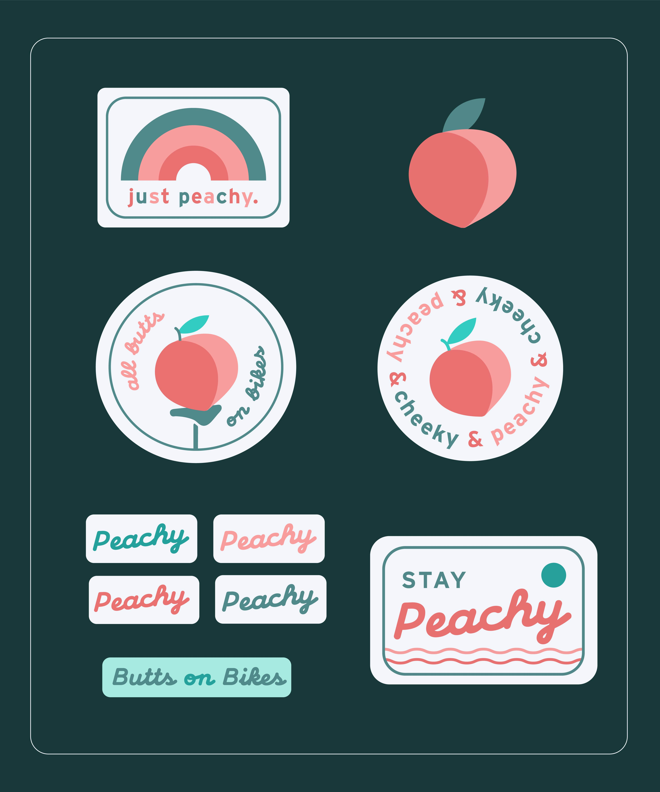
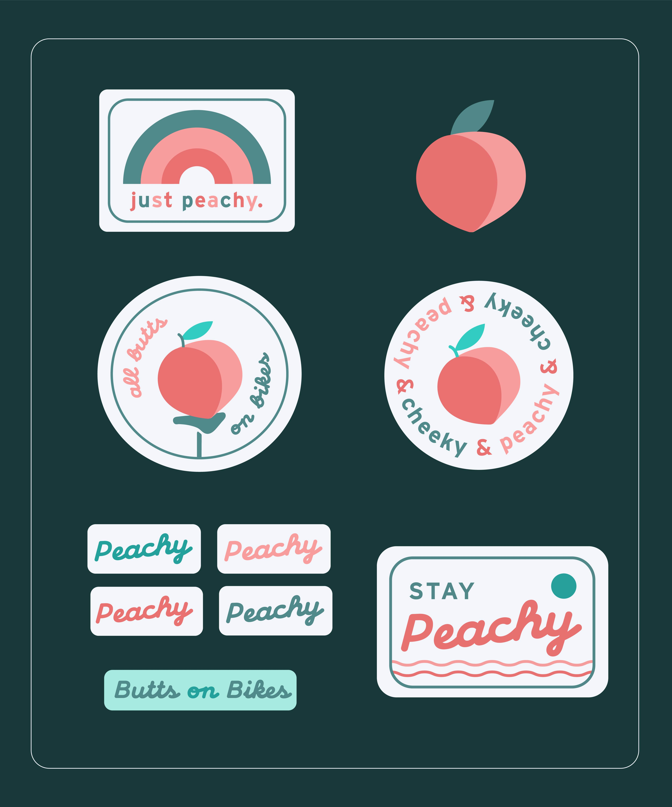

Research and Data Collection
I began working on research ever since I started an internship at a local bike company, and then through the Design Studio class last summer. I read through several articles online about the current cycling scene in the US, and talked with my friends who ride bikes about the barriers that stop women, LGBTQIA, and BIPOC folks from cycling. According to that research and to other people's thoughts, Peachy Cycles was created. You can view the list of resources here.
Why the name 'Peachy Cycles'? Because all butts on bikes! I wanted to bring a goofy fun approach to express positivity, and a laid-back welcoming vibe.
Logo Sketches

After lots of iterations, and feedback from the class, I updated the logo and created the brand identity:
 

Then, to come up with the website sections or features, I did user some user-interviews and user-testing with a few people from my network who are into biking, and with some folks from a few cycling groups in the country. I asked them what they would like to see in Peachy Cycles. What do current cycling websites lack? What would make biking more accessible?
Feedback Highlights
- Most users wanted to have the ability to connect with other cyclists.
- Folks are interested in connecting with bike shops and in finding cycling groups to join that are beginner friendly.
- Making maintenance workshops specifically for women, LGBTQIA+ and BIPOC.
- Riders are interested in having safety resources accessible, as well as cycling tips.
- Social media presence will help the social aspect